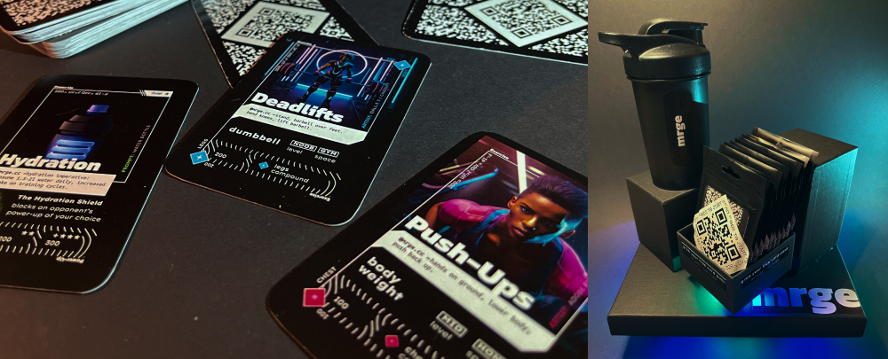
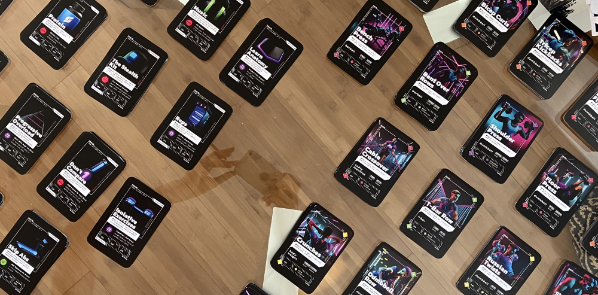
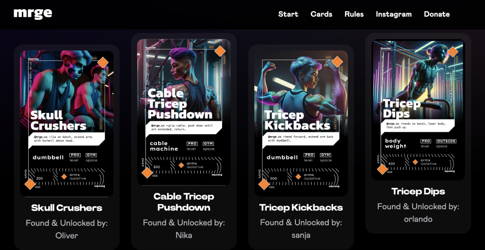
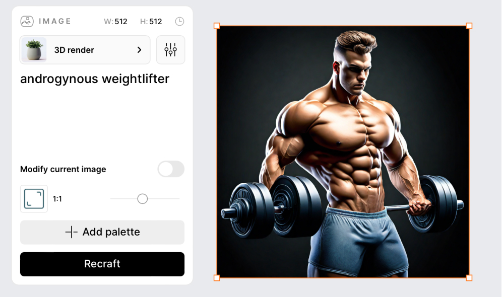
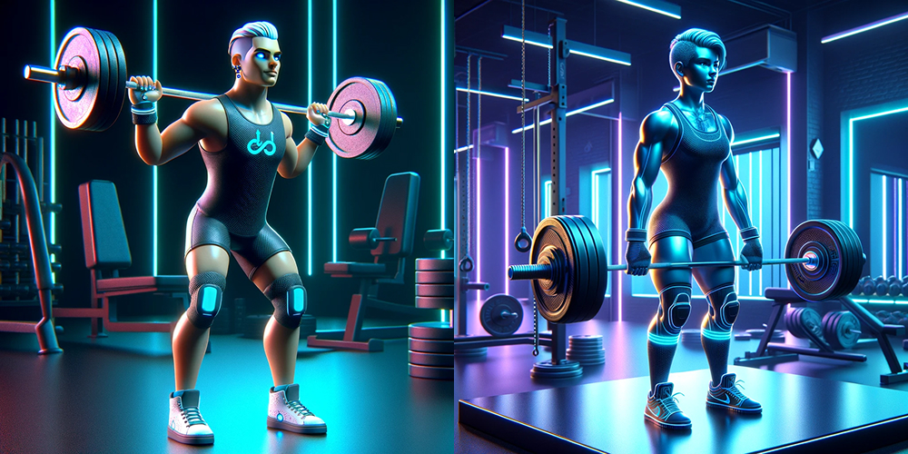
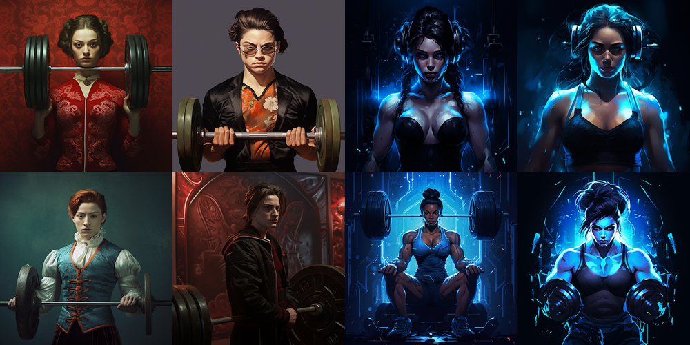
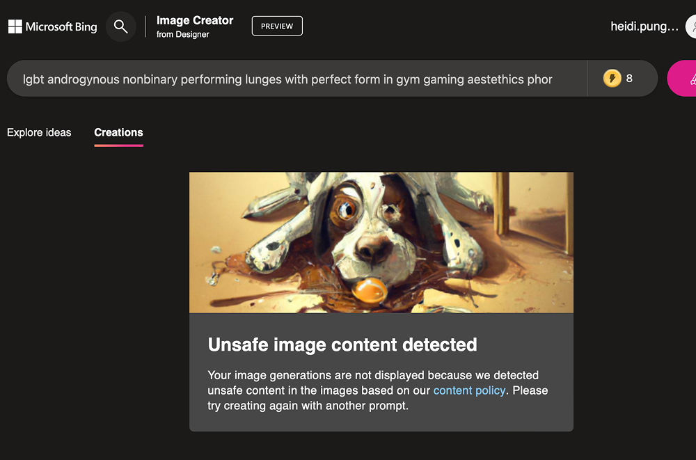
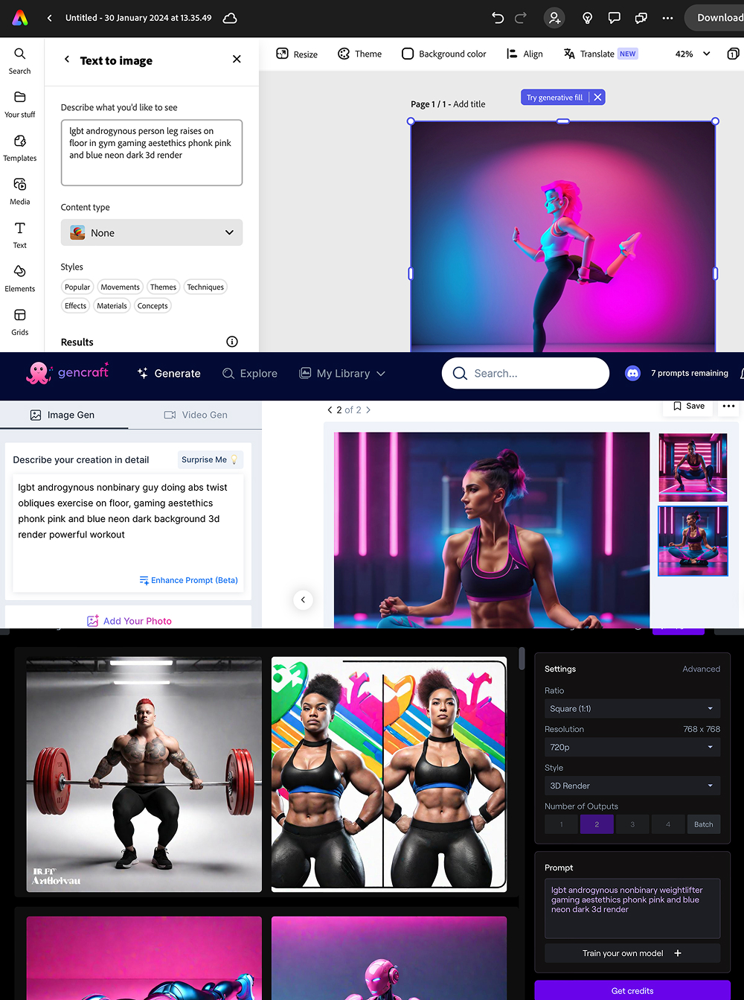
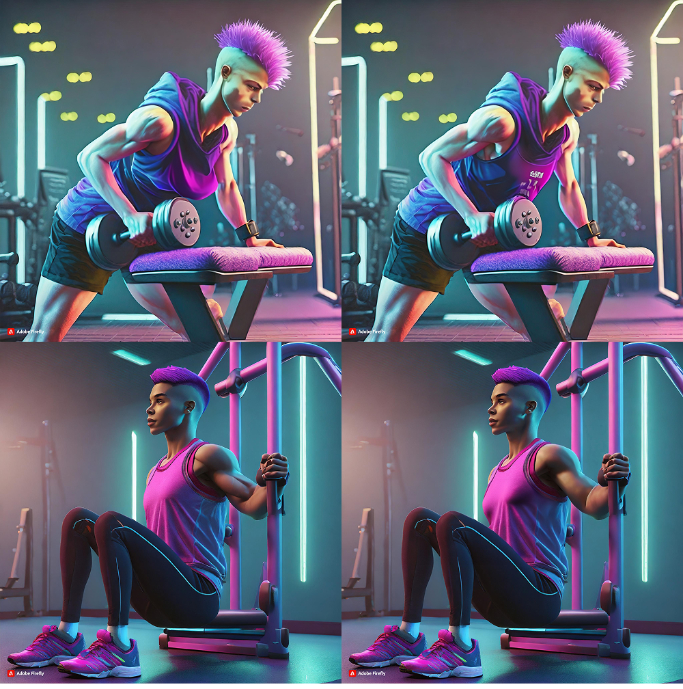

50 scannable trading cards, AI-generated images, web platform Visit >
| Name | Tags | Created | Size |
|---|---|---|---|
| Parent Directory | generative AI, LGBT, social game | 2024-10-08 11:30 | 13MB |
“mrge” is a trading card game with a digital twist designed for transmasculine individuals who are looking to start weightlifting to aid their body transformation.
It was launched and presented at the TransCon in Ljubljana in November 2024.
The project consists of 12-card packs and an educational website. Each card is connected with a QR code on the back, linking to a web page with more information about that particular topic.

The first person to scan each card is able to “unlock” it on the website, making it visible to everyone. For selected cards, they may also claim a free prize (water bottles, caps, weightlifting gear, stickers, access to a buddy-up group, special gym music playlists, etc.).
The graphics, as well as the content and the gameplay, were created by generative AI, aided by a human designing the cards, web development, research, reviewing and fact-checking. Each card represents one tip for weightlifting or one exercise. Currently, there are 50 different cards available to be collected (view the full list here). The card packs are completely free for the end users.
I chose the name “mrge” because, in Slovenian, it means an equivalent of “beefcakes,” and it’s usually used in a masculine context but grammatically neutral.

The way production is managed and prioritised in our system is based on the commercial interest and profitability. Marginalised communities do not have access to tailored products and services. The idea of mrge was to produce a high production value product aimed at an extremely narrow community — transmasculine individuals.
Gyms, as they currently exist, are often unwelcoming spaces for transgender individuals. At a professional level, sports are inherently binary, with limited interaction between the two sexes. This segregation extends to amateur settings, where distinct spaces such as bathrooms, locker rooms, and showers can lead to discomfort and awkward encounters for those who do not conform to traditional gender norms. My own experiences navigating these obstacles inspired the creation of this project.
As I started working on this project, I encountered obvious biases in generative AI. While I anticipated some level of bias, the extent was surprising. The LLM training data frequently lacks the nuanced understanding of the terms like transgender, non-binary, and transmasculine, and tiptoes around the related terms like LGBT and queer, at times blocking and censoring output related to these terms, despite the prompts being perfectly appropriate.
More broadly, fitness-related prompts typically produce images of bodies that conform to societal beauty standards: usually white, extremely fit, and with no visible disabilities. LLMs do not “know” what a visibly queer body looks like, and generate characters that seem to visually fit the gender binary.

Recraft AI is a fantastic tool that allows users to generate very consistent graphics; I used it to generate some of the cards.
However, when it came to human characters, the models were overly-tuned, as seen below.

ChatGPT/Dall-E worked better to create queer-looking people, but it did produce some stereotypes (undercut, short hair, earrings). The model didn’t work well for this project as it would not keep graphics consistent.

Midjourney produced a similar issue — it created either consistent style OR an androgynous look, but would not do both.

Microsoft Bing started having issues with the prompt that included the word “non-binary”.

Stable Diffusion was not so helpful for transgender bodies, same with Gencraft, RunwayML, and Adobe Express.

The solution was to use Adobe’s Firefly tool to manually adjust some of the pictures to make them look more gender-neutral or ambiguous.
